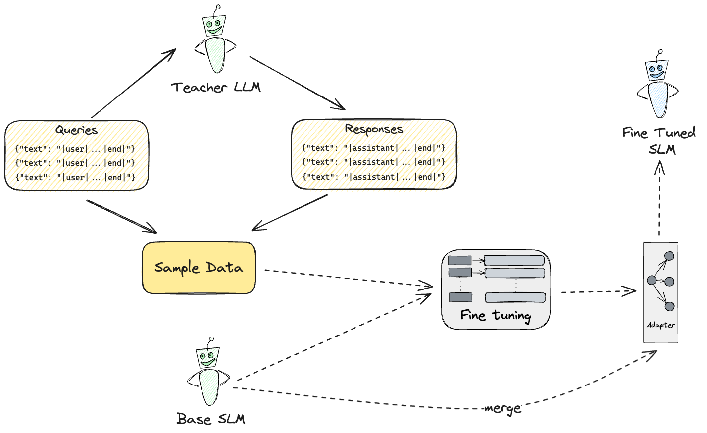

SLMs?
Running SLMs


Consider the following classification problem.

SLM Customization

<|system|>
You control a music player. You can use these functions:
- play_song(title): Play a specific song
- play_list(title): Play a specific playlist
- pause: Pause playback
- stop: Stop playback
- next: Skip to next track
- prev: Go to previous track
- vol_up: Increase volume
- vol_down: Decrease volume
- mute: Mute audio
- unmute: Unmute audio
You respond with a function call in the format: fn:function_name "parameter" (if needed and in lowercase) or say "Sorry I cannot help with that".
Examples:
"Play Bohemian Rhapsody" -> fn:play_song "bohemian rhapsody"
"Play workout mix" -> fn:play_list "workout mix"
"Skip this -> fn:next.
<|end|>
<|user|>
I don't like this song
<|end|>
<|assistant|>
<|user|>
I don't like this song
<|end|>
<|assistant|>

SLM query rewriting is now an integral part of Azure AI Search